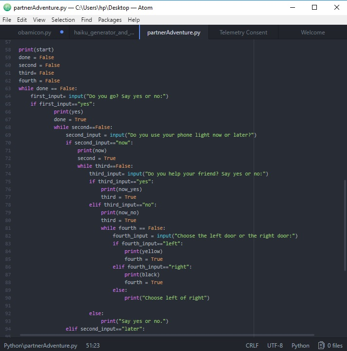
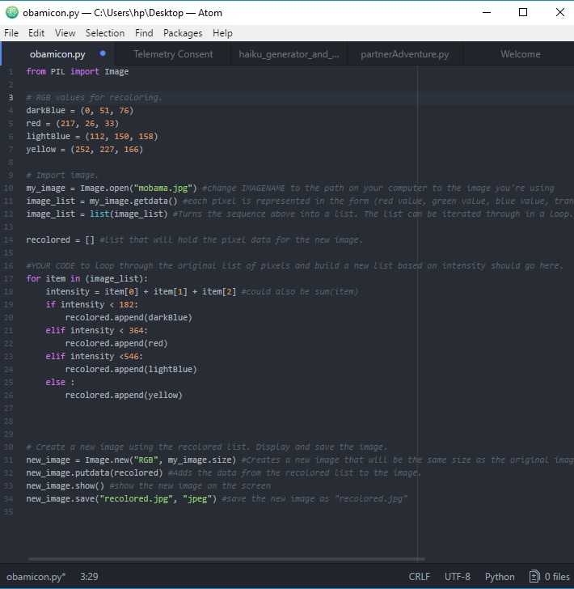

Loops
What's a Loop?: A loop is a sequence of instruction s that is continually repeated until a certain condition is reached. Typically, a certain process is done, such as getting an item of data and changing it, and then some condition is checked such as whether a counter has reached a prescribed number.
Real life example:A train which makes the same stops each rotation. It does not stop until told to.
Scratch: The orange "forever" block represents the forever loop until the user tells the computer.

Python: "while" statement in picture below
Conditionals
What's a conditional?: A conditional expressions and conditional constructs are features of a programming language, which perform different computations or actions depending on whether a programmer-specified boolean condition evaluates to true or false.
Real life example: If you go on the 405 freeway, then there will be traffic. If you go on the 10 freeway, there won't be as much traffic.
Scratch:The "if" block is the conditional and all of the blocks inside represent the "then" of a conditional.

Python:"if" statements in picture below
Variable
What's a variable?: A variable or scalar is a storage location paired with an associated symbolic name (an identifier), which contains some known or unknown quantity of information referred to as a value.Compilers have to replace variables' symbolic names with the actual locations of the data.
Real life example: If you are measuring your heart rate while you are running, the heart rate would be a variable as it changes when you run.
Scratch: The orange "costume" block is a variable in Scratch. The user can call the variable to make it work a certain way. In this example, there are 6 different costumes and the code tells the computer to pick a random costume and to change it to that costume.

Python: "first_input= input" is an example of a variable. We programmed it so whenever we use "first_input", it would gt the input from the specific input.
Functions
What's a function?: A function is a type of procedure or routine. Some programming languages make a distinction between a function, which returns a value, and a procedure, which performs some operation but does not return a value.
Real life example: A scavenger hunt is an example of a function. It tells you where to go step by step and there is an outcome at the end.
Scratch: The purple block allows the user to define a function by putting certain blocks underneath it. Therefore, if an user want to use the function, there is another purple block which calls the specific function.
Python: "image_list" is an example of a function. In the code, the image_list goes through a list of different instructions.
